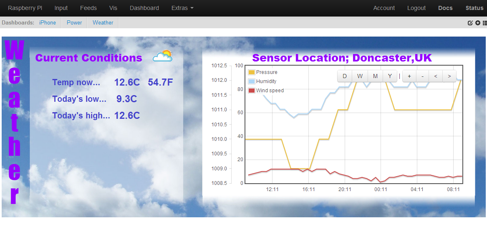

Just found a really useful blog post from oem member Martin Harizanov, detailing how to import weather data from www.wunderground.com into emoncms.
Just tried it, and am now getting data feeds from an airport weather station about 1 mile away from where I live, with options to get; windspeed, pressure, relative humidity, rainfall + lots more.
The hardest thing was setting up a cron job to call the script, but once I got my head around cron, I set it to call the script every 30 minutes on the hour.
$ sudo crontab -e
and add;
*/30 * * * * /usr/bin/php /home/pi/mystuff/wunderground
to the bottom of the cron file, where /home/pi/mystuff/ is the location of Martin's script - 'wunderground'.
Paul
Re: Weather data - emoncms
Hi,
I have the scrpt running, and emoncms is showing the current temperature, but I can't get an working history plotted. Any insight in how to do this for a newbie?
Re: Weather data - emoncms
Have you php5-curl installed on your system?
Paul
Re: Weather data - emoncms
Oh yes, I have all running, and I am getting data back and even have the recent fetched data in emoncms in the feeds. But how does one create an history graphic for temperature for instance? I now have only a gauge for the current temperature.
The history input is configured, but the data stays at 0 in the feeds.
Re: Weather data - emoncms
Dang!
I have it working now, the graphic in the dashboard is rawdata, with the actual log as input, not the hist..
Re: Weather data - emoncms
Glad you got it working, it's a great little script isn't it.
Paul
Re: Weather data - emoncms
Mattia (Madmatt) has written a little script to retrieve the 'current weather condition' icon from Wunderground.com using the api, which enables it to be placed in your dashboard.
Details about the script can be found in this post.
Paul
Re: Weather data - emoncms
Am I using a different emoncms to you guys? My feed api is http://myurl.com/feed/api .. it is quite frustrating when emoncms just responds with a blank screen. No erroring.
Re: Weather data - emoncms
The script we're talking about pulls data from weather underground ... The api link you see in it isn't for an emoncms instance...
Re: Weather data - emoncms
The script calls emoncms via an api call.
$url = 'http://***********/emoncms3/api/post?apikey=***EMONCMS_API*****&json={humidity:' . $relative_humidity . ',pressure:' . $pressure_mb . ',wind:' . $wind_kph . ',temp:' . $temp_c .'}';
I've changed the parts required and am trying to call the URL directly .. I can't see anything coming into the feeds and the API help page shows a different structure ...
I am using the latest version from git ... https://github.com/emoncms/emoncms.git ..
Api Help ...
Available JSON commands
To use the json api the request url needs to include .json
Post data
JSON format: http://myurl/input/post.json?json={power:200}
CSV format: http://myurl/input/post.json?csv=100,200,300
Assign inputs to a node group ...
Re: Weather data - emoncms
Yes you need to amend the URL to that of your own installation, so if you have used that standard installation folder of 'emoncms', simply change it from 'emoncms3' to 'emoncms';
Its inputs should then appear in your input list, and updated whenever the script is run.
Paul
Re: Weather data - emoncms
... Sorry elyobelyob ... mixed the threads up ... maybe I should add a rule to my personal rule book not to post anything on sunday mornings ;)
Re: Weather data - emoncms
Thanks Paul,
Turned out to be a mixture of Timestore trying to be used (not installed on my FreeBSD yet) and the url needing to be ..
$url = 'http://***********/api/post?apikey= etc etc
Re: Weather data - emoncms
Just changed the script to retrieve the weather icon directly from the main script (instead of using 2 scripts). I'm now using;
...to save the 'current weather conditions' image file, direct into /var/www/images/ folder, and update it automatically. It can then be image linked from within the emoncms dashboard.
I've put the script in Github if anyone wants it.
Paul

Re: Weather data - emoncms
Hi guys, I don't know what I'm doing wrong, I hope someone can help me!!
I can get the information from wunderground no problem with all the attributes but I can't for the life of me get the info into an input?
$url = 'http://**IPaddress**/emoncms/api/post?apikey=**APIKey**&json={edm-humidity:' . $relative_humidity . ',edm-pres
sure:' . $pressure_mb . ',edm-wind:' . $wind_kph . ',edm-temp:' . $temp_c .'}';
echo $url;
$ch = curl_init();
curl_setopt($ch, CURLOPT_URL,$url);
curl_setopt($ch, CURLOPT_RETURNTRANSFER, 1);
$contents = curl_exec ($ch);
curl_close ($ch);
I have php5-curl installed
The only error I can find is:
PHP Notice: Undefined index: write in /var/www/emoncms/Modules/input/input_controller.php on line 22
Thoughts?
Thanks!!
Re: Weather data - emoncms
I assume this is a typo but in your URL you've put **IPaddress** This needs to be the address of the server you are running emoncms on. Unless you've got the emoncms server running on an ipad, in which case I salute you :-)
The other thing is again in the URL where you have "emoncms/api/post?apikey=" try changing this to "emoncms/api/post.json?apikey=" as to use the json api the request url needs to include .json this is defined on the emoncms Input API help page.
Re: Weather data - emoncms
If it can be of any help, here's my current working script. I use here the longitude and latitude in the string to get the nearest weather station data.
Re: Weather data - emoncms
As ukmoose has said, you need to replace **IPaddress** with your own emoncms IP address.
I haven't included .json in my installation, and it's worked reliably since September.
Paul
Re: Weather data - emoncms
Thanks guys for the quick response, I did have the proper IP address, just screened it out but the working example from jonrescca was excellent and explained everything. I was missing the node portion, which I was curious about but assumed the /api/ was somehow automatically assigning one.
I needed the change ukmoose sugested and with the great working example from jonrescca its working!!!
Thanks guys
Re: Weather data - emoncms
Hey Guys,
Found this forum, there are some updates that need to happen to for it to work in the newest EmonCMS. This uploads directly to www.emoncms.org, but you can change the URL to go to wherever you need.